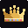
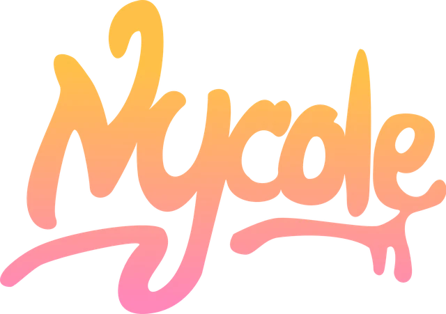

Partner
Kronwerke sucht keine Sponsoren, sondern Mitspieler. Partner sind Communities, die mit uns spielen wollen: ein Discord, ein YouTube-Kanal, ein Clan, ein anderer Server, der eine Season lang mitmacht.
Wer zu uns passt
Communities ohne eigenen Server
Ein Discord oder eine Gruppe, die zusammen Minecraft spielen will, aber keinen Server und kein Modpack hat. Ihr bekommt Plätze, wir kümmern uns um den Rest.
Creator ohne Live-Stream
YouTube, TikTok, Shorts: Wer Videos statt Streams macht, bekommt die gleichen Plätze für seine Leute wie ein Streamer. Die Events kann man auch schneiden.
Andere Server und Projekte
Ein Server, der zwischen zwei Seasons Pause macht, oder ein Projekt, das seine Spieler eine Season lang bei uns parkt. Ihr behaltet eure Leute, wir teilen den Winter.
Modpack- und Technik-Leute
Wer Create, Mekanism oder Botania in- und auswendig kennt, ist hier Gold wert: Jede Stufe braucht Leute, die den anderen zeigen, wie es geht.
Was eine Partner-Community bekommt
- Plätze auf der Whitelist für eure Leute, verwaltet von einer Person aus eurer Community im Discord, genau wie bei einem Streamer.
- Einen Platz auf dieser Seite und in der Vorstellung der Season, mit Link zu euch.
- Fünf Events, an denen der ganze Server zusammen live ist, und ein Ziel am Obelisken, das eure Beiträge mitzählt.
- Ein fertiges Pack, ein Questbuch auf Deutsch und Englisch, Sprachchat, Grundstücksschutz. Ihr müsst nichts aufsetzen.
Was wir erwarten
- Eine Person, die für eure Community spricht, auf dem Discord bleibt und die Plätze vergibt.
- Eure Leute halten sich an die Regeln des Servers. Was sie anstellen, landet zuerst bei euch.
- Ihr sagt euren Leuten, wann die Events sind. Mehr nicht.
Unsere Partner

Hauptwelt, Minenwelt, Nether und End: Jede Welt von Kronwerke läuft bei Tavuru.
Zu Tavuru
HauptweltBasen, Obelisk und die fünf Stufen
Logos, Banner, Pixel Art und Minecraft-Grafiken. Gerade zeichnet Nycole das neue Logo für Season 2.
Zu Nycoles PortfolioKontakt
Schreib uns im Discord an das Team oder per E-Mail an contact@elchi.dev. Ein Satz, wer ihr seid und wie viele ihr ungefähr seid, reicht. Wir melden uns.